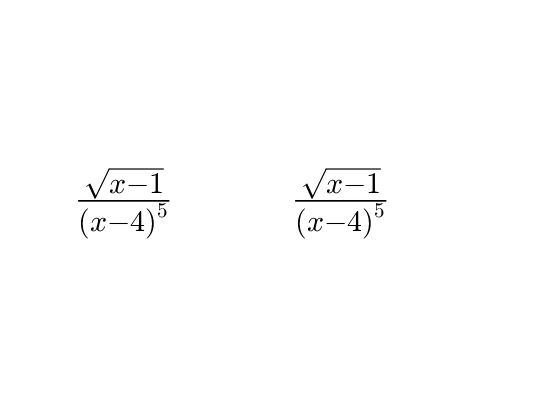
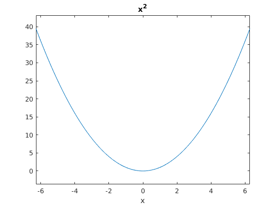
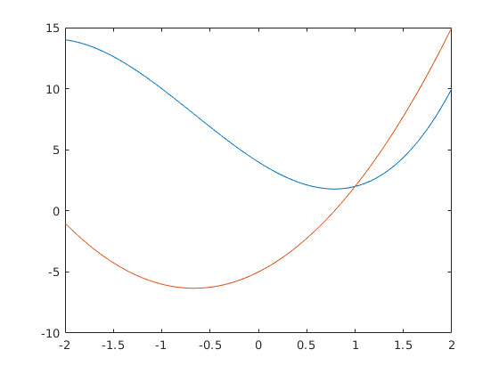
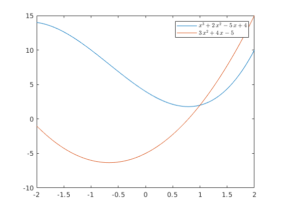

Contents
- Simboliskaa mateemaatika
- Piemeers
- Simbolisko mainiigo defineesana
- pienemsim kaa x ir lielaaks par 0
- pienemsim kaa a11 a12 a21 a22 ir relaali
- 3. veids
- atvisinaasana
- parciaalie atvisinaajumi
- Integreesana
- Nenoteiktais integraalis\
- Noteiktais integraalis
- Robezas
- Vienaadojumu risinaashana
- Vienaadojumu sisteemas
- izteiskmju vienkaarsosana
- izteiksju veinkaarsosana 2
- izteiksju veinkaarsosana 3
- izteiksju veinkaarsosana 4
- simboliskas konstantes
- izteismju "skaista" atteloshana
- izteismju "skaista" atteloshana 2 variants
- rezultaatu grafiska atteloshana
- apreekinu veiksana
- apreekinu veiksana
- rezultaatu grafiskaa atteloshana ar plot
- (2. lab. darba 2. uzdevums)
- 1.
- (punktinu ielikshana)
- 4. defineesim x kaa skaitlu vektoru
- tas biija 5. solis, izteiksmes interpretaacjia, citiem vaardiem, paskataas kaads ir x un ieliek to
- 6. ziimesim ar plot
- 7. anoteesim grafiku
%-- 02/18/2020 02:37:00 PM --% mkdir lab2 cd lab2 diary lab2_diary
Warning: Directory already exists.
Simboliskaa mateemaatika
Piemeers
syms a11 a12 a21 a22 A = [a11 a12 ; a21 a22] syms b11 b12 b21 b22 B = [b11 b12 ; b21 b22] C = A*B D = A.*B
A = [ a11, a12] [ a21, a22] B = [ b11, b12] [ b21, b22] C = [ a11*b11 + a12*b21, a11*b12 + a12*b22] [ a21*b11 + a22*b21, a21*b12 + a22*b22] D = [ a11*b11, a12*b12] [ a21*b21, a22*b22]
Simbolisko mainiigo defineesana
1. veids
x = sym('x'); y = sym('y'); sqrt(x^2)
ans = x
pienemsim kaa x ir lielaaks par 0
x = sym('x','positive'); sqrt(x^2) % 2. veids syms a11 a12 a21 a22 A = [a11 a12; a21 a22]; A'
ans = x ans = [ a11, a21] [ a12, a22]
pienemsim kaa a11 a12 a21 a22 ir relaali
syms a11 a12 a21 a22 real A'
ans = [ a11, a21] [ a12, a22]
3. veids
A = sym('a',[3 4])
A = [ a1_1, a1_2, a1_3, a1_4] [ a2_1, a2_2, a2_3, a2_4] [ a3_1, a3_2, a3_3, a3_4]
atvisinaasana
syms x
diff(x^2)
ans = 2*x
parciaalie atvisinaajumi
syms x y z = x^5+y^4; diff(z,x) diff(z,y)
ans = 5*x^4 ans = 4*y^3
Integreesana
Nenoteiktais integraalis\
int(x^2,x) syms a x int(x^2,a)
ans = x^3/3 ans = a*x^2
Noteiktais integraalis
syms x
int(x^2,x,-3,3)
double(int(x^2,x,-3,3))
ans =
18
ans =
18
Robezas
limit()
syms x limit(1/(x-1),x,1,'left') limit(1/(x-1),x,1,'right')
ans = -Inf ans = Inf
Vienaadojumu risinaashana
syms x
solve(x^2-5*x+6==0,x)
ans = 2 3
Vienaadojumu sisteemas
syms x y z atb = solve(x+y+z==21,x+y-z==1,x-y+z==9) atb.x atb.y atb.z
atb =
struct with fields:
x: [1×1 sym]
y: [1×1 sym]
z: [1×1 sym]
ans =
5
ans =
6
ans =
10
izteiskmju vienkaarsosana
syms x
y = (x-1)*(x-2)/((x-3)*(x-4)^2)
yd = diff(y)
simplify(yd)
y = ((x - 1)*(x - 2))/((x - 3)*(x - 4)^2) yd = (x - 1)/((x - 3)*(x - 4)^2) + (x - 2)/((x - 3)*(x - 4)^2) - (2*(x - 1)*(x - 2))/((x - 3)*(x - 4)^3) - ((x - 1)*(x - 2))/((x - 3)^2*(x - 4)^2) ans = (- x^3 + 2*x^2 + 9*x - 16)/((x - 3)^2*(x - 4)^3)
izteiksju veinkaarsosana 2
syms x
y = (x-2)*(x-3);
y
y2 = expand(y)
y = (x - 2)*(x - 3) y2 = x^2 - 5*x + 6
izteiksju veinkaarsosana 3
factor(y2)
ans = [ x - 2, x - 3]
izteiksju veinkaarsosana 4
horner(y)
ans = x*(x - 5) + 6
simboliskas konstantes
pi format long pi a = vpa('pi') b = vpa('2') c = vpa(2) a+b+c digits(100) a = vpa(pi) a = vpa(exp(1)) sqrt(a) digits(10) sqrt(a) class(a) class(b) class(c)
ans =
3.141592653589793
ans =
3.141592653589793
a =
3.141592654
b =
2.0
c =
2.0
ans =
7.141592654
a =
3.141592653589793238462643383279502884197169399375105820974944592307816406286208998628034825342117068
a =
2.71828182845904553488480814849026501178741455078125
ans =
1.648721270700128237684053351021451524365396084769306765683519857939541955411797717598212470725485303
ans =
1.648721271
ans =
'sym'
ans =
'sym'
ans =
'sym'
izteismju "skaista" atteloshana
y = (x-1)*(x-2)/((x-3)*(x-4)^2) pretty(y)
y =
((x - 1)*(x - 2))/((x - 3)*(x - 4)^2)
(x - 1) (x - 2)
----------------
2
(x - 3) (x - 4)
izteismju "skaista" atteloshana 2 variants
syms x y = sqrt(x-1)/(x-4)^5 yltx = latex(y) yltx2 = ['$',yltx,'$'] text(0,0.5,yltx2,'Interpreter','latex','FontSize',32,'BackgroundColor','white') text(0.5,0.5,yltx2,'Interpreter','latex','FontSize',32,'BackgroundColor','white') set(gca,'Visible','off')
y =
(x - 1)^(1/2)/(x - 4)^5
yltx =
'\frac{\sqrt{x-1}}{{\left(x-4\right)}^5}'
yltx2 =
'$\frac{\sqrt{x-1}}{{\left(x-4\right)}^5}$'
 rezultaatu grafiska atteloshana
apreekinu veiksana
syms x
y = x^2;
ezplot(y)
 apreekinu veiksana
rezultaatu grafiskaa atteloshana ar plot
(2. lab. darba 2. uzdevums)
1.
Pienemsim ka ir dota funkcija, kurai ir jaatrod atvasinaajums Un gan funkciju, gan atvasinaajumu buus jaauziimee uz grafika izmantojot plot uzdotaajaa intervaalaa arii ar letex buus jaaizveido "legend" -a
syms x y = x^3+2*x^2-5*x+4; % 2. yd = diff(y) % atradam atvasinaajumu % 3. % Izteiksmes vektorizaacija
yd = 3*x^2 + 4*x - 5
(punktinu ielikshana)
yv = vectorize(y) ydv = vectorize(yd)
yv =
'2.*x.^2 - 5.*x + x.^3 + 4'
ydv =
'4.*x + 3.*x.^2 - 5'
4. defineesim x kaa skaitlu vektoru
x = -2:0.01:2; yn = eval(yv); ydn = eval(ydv);
tas biija 5. solis, izteiksmes interpretaacjia, citiem vaardiem, paskataas kaads ir x un ieliek to
6. ziimesim ar plot
plot(x,yn,x,ydn)
7. anoteesim grafiku
yltx = latex(y); ydltxt = latex(yd) h = legend(['$',yltx,'$'],['$',ydltxt,'$']), set(h,'Interpreter','Latex') plot(x,yn,x,ydn) h = legend(['$',yltx,'$'],['$',ydltxt,'$']), set(h,'Interpreter','Latex')
ydltxt =
'3\,x^2+4\,x-5'
h =
Warning: Error updating Legend.
String scalar or character vector must have valid interpreter syntax:
$x^3+2\,x^2-5\,x+4$
Warning: Error updating Legend.
String scalar or character vector must have valid interpreter syntax:
$3\,x^2+4\,x-5$
Legend ($x^3+2\,x^2-5\,x+4$, $3\,x^2+4\,x-5$) with properties:
String: {'$x^3+2\,x^2-5\,x+4$' '$3\,x^2+4\,x-5$'}
Location: 'northeast'
Orientation: 'vertical'
FontSize: 9
Position: [1×4 double]
Units: 'normalized'
Use GET to show all properties
h =
Warning: Error updating Legend.
String scalar or character vector must have valid interpreter syntax:
$x^3+2\,x^2-5\,x+4$
Warning: Error updating Legend.
String scalar or character vector must have valid interpreter syntax:
$3\,x^2+4\,x-5$
Legend ($x^3+2\,x^2-5\,x+4$, $3\,x^2+4\,x-5$) with properties:
String: {'$x^3+2\,x^2-5\,x+4$' '$3\,x^2+4\,x-5$'}
Location: 'northeast'
Orientation: 'vertical'
FontSize: 9
Position: [1×4 double]
Units: 'normalized'
Use GET to show all properties
